Testing InterfacesThis document provides step-by-step instructions for validating the hardware interfaces on the ADLINK OSM-520 platform. It covers the testing procedures for various peripherals and interfaces to ensure proper functionality. 1. GPIOThe connectors CN2901 (7 pins) and CN2904 (1 pin) provide a total of 8 GPIOs. The table below maps the physical pin numbers on these connectors to their corresponding Linux GPIO numbers. PIN NAME CONNECTOR PIN NUMBER ON PHYSICAL CONNECTOR LINUX OS CHIP NUMBER LINUX OS PIN OFFSET IN CHIP E_GPIO0 CN2901 7 1 7 E_GPIO1 CN2901 11 1 9 E_GPIO2 CN2901 13 1 10 E_GPIO3 CN2901 15 1 11 E_GPIO4 CN2901 12 1 12 E_GPIO5 CN2901 16 1 13 E_GPIO6 CN2901 18 1 14 E_GPIO7 CN2904 2 1 15 Setting GPIO as OutputUse the following command to configure a GPIO as output and set its value. The pin voltage can be verified using a multimeter. gpioset -c <LINUX OS CHIP NUMBER> <LINUX OS PIN OFFSET IN CHIP>=<0 or 1> Examples: a) Set pin 7 on connector CN2901 to output high: gpioset -c 1 7=1 b) Set pin 2 on connector CN2904 to output low: gpioset -c 1 15=0 Setting GPIO as InputUse the following command to read the value of a GPIO pin. gpioget -c <LINUX OS CHIP NUMBER> <LINUX OS PIN OFFSET IN CHIP> To verify input functionality, perform a loopback test by connecting an output pin to an input pin and observing the value change. Examples: a) Read the value from pin 18 on connector CN2901: gpioget -c 1 14 b) Read the value from pin 15 on connector CN2901: gpioget -c 1 11 2. SDInsert the SD card, power on the board, and run the following command to confirm detection: lsblk The SD card will appear as a device named mmcblk1, along with its partitions (e.g., mmcblk1p1, mmcblk1p2). 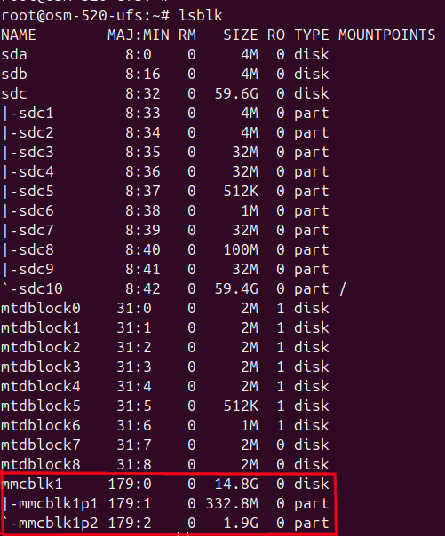 Write Test: dd if=/dev/urandom of=/dev/mmcblk1 bs=1M count=100 oflag=direct Read Test: dd if=/dev/mmcblk1 of=/dev/null bs=1M count=100 iflag=direct Both commands will report the data transferred and the speed on completion. A successful test will show 100 MB transferred with no errors. 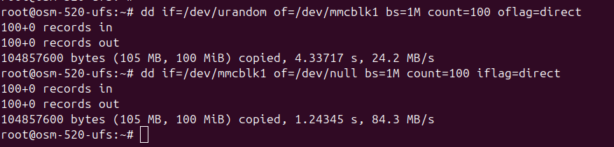 3. I2CThe module features six I2C buses. To list all available I2C buses, run: i2cdetect -y -l 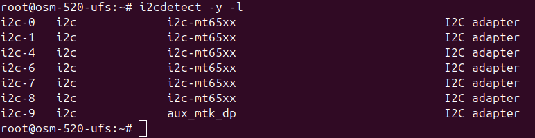 To scan for connected devices on a specific bus, use: i2cdetect -y -r <i2c-bus> The following external I2C interfaces are available: Pins CN2901-3 (SDA) and CN2901-5 (SCL) correspond to I2C bus 0 in Linux. Pins CN2904-7 (SDA) and CN2904-8 (SCL) correspond to I2C bus 1 in Linux. 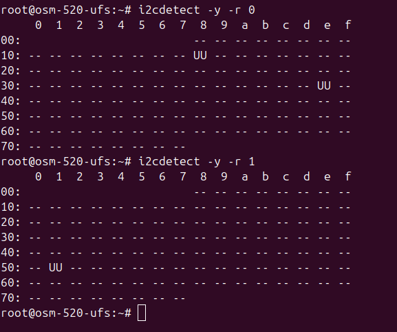 The output of i2cdetect -y -r will display detected devices across the address grid. The values are interpreted as follows: A hex value indicates the detected device address on that bus. UU indicates the address is already in use by a kernel driver. -- indicates no device is present at that address. 4. SPIThe OSM-520 provides two SPI user interfaces: spidev0.0 and spidev1.0. Both can be verified by performing a physical loopback test. SPI A (spidev0.0)Hardware setup: Short the SPI_A_SDO (CN2902-4) and SPI_A_SDI (CN2902-6) pins on the connector. Then run the following commands to send a test binary and verify the loopback: modprobe spidevls -l /dev/spidev0.0dd if=/dev/random of=test.bin bs=96 count=1spidev_test -D /dev/spidev0.0 -s 400000 -i test.bin -v 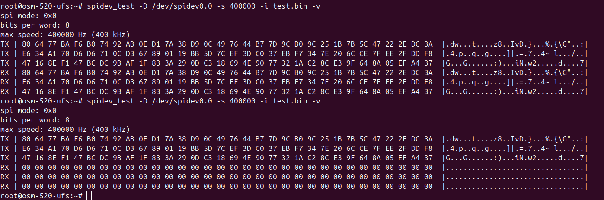 SPI B (spidev1.0)Hardware setup: Short the SPI_B_SDI (CN2901-19) and SPI_B_SDO (CN2904-1) pins on the connector. Then run the following commands to send a test binary and verify the loopback: modprobe spidevls -l /dev/spidev1.0dd if=/dev/random of=test.bin bs=96 count=1spidev_test -D /dev/spidev1.0 -s 400000 -i test.bin -v 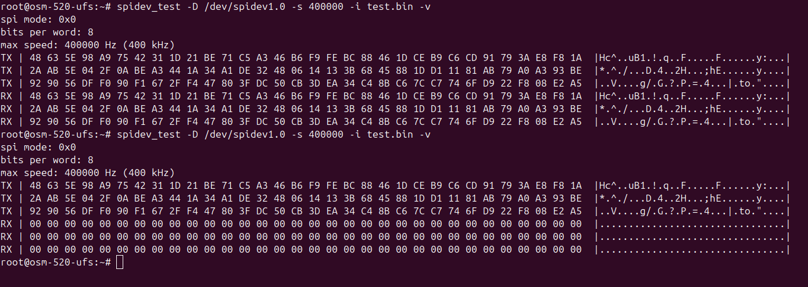 For both interfaces, the output will display the transmitted (TX) and received (RX) data. A successful loopback is confirmed when the RX data matches the TX data. If the RX data is all zeros or does not match, the loopback connection is not correct. 5. USBThe board provides four external USB connectors: two USB 3.0 ports and two USB 2.0 ports. Connect any USB device (e.g., a USB storage drive) and verify detection using: lsusb -tv 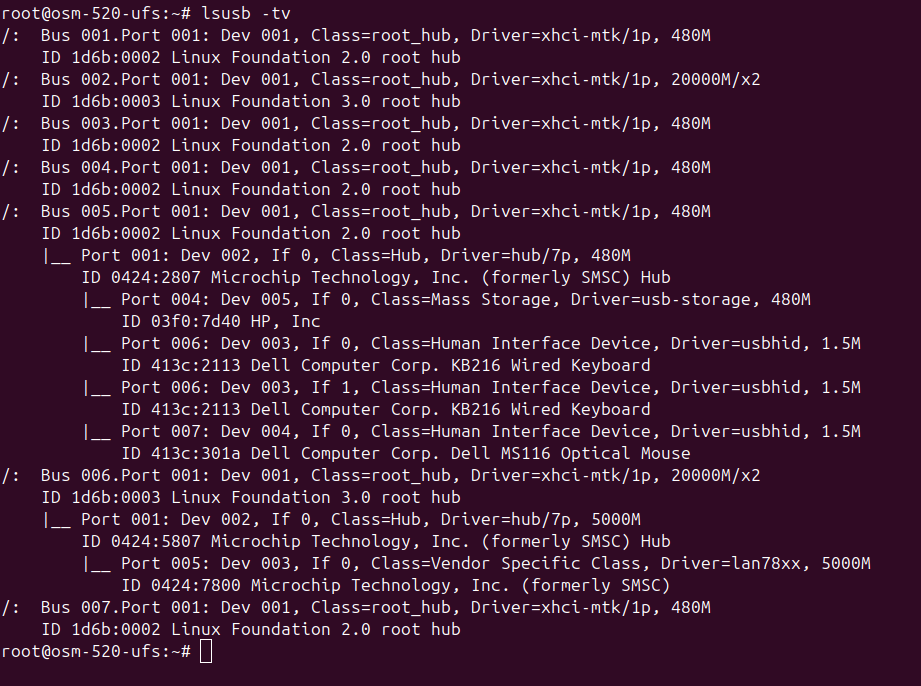 The output lists all USB buses and their connected devices in a tree structure, showing the device class, driver, and speed. For example, a USB 2.0 hub with a storage drive, keyboard, and mouse connected would appear under a 480M bus, while a USB 3.0 hub with a network adapter would appear under a 20000M/x2 bus. 6. Display InterfacesEach display interface requires the appropriate Device Tree Overlay (DTO) to be set before booting. Set the boot configuration using the relevant command below and reboot the board. After reboot, verify that the display output is active. DPfw_setenv boot_conf "#conf-mediatek_osm-520_mtk520.dtb#conf-ufs.dtbo#conf-apusys.dtbo#conf-panel-dp.dtbo"reboot eDPfw_setenv boot_conf "#conf-mediatek_osm-520_mtk520.dtb#conf-ufs.dtbo#conf-apusys.dtbo#conf-panel-edp.dtbo"reboot LVDS (g101eat026)fw_setenv boot_conf "#conf-mediatek_osm-520_mtk520.dtb#conf-ufs.dtbo#conf-apusys.dtbo#conf-panel-lvds-g101eat026.dtbo"reboot DSIfw_setenv boot_conf "#conf-mediatek_osm-520_mtk520.dtb#conf-ufs.dtbo#conf-apusys.dtbo#conf-panel-dsi.dtbo"reboot 7. AudioDP AudioConnect a DP monitor, then first identify the sound card number by running: aplay -l | grep -i hdmi This will output the card and device number for DP audio playback. 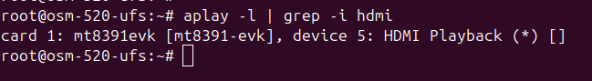 In this case, the card number is 1 and the device number is 5. Use these values in the commands below. Configure the audio routing and run the speaker test: amixer -c 1 cset name='HDMI_CH0_MUX' 'CH0'amixer -c 1 cset name='HDMI_CH1_MUX' 'CH1'amixer -c 1 cset name='DPTX_OUT_MUX' 'Connect'speaker-test -D hw:1,5 -c 2 -t sine -f 440 A successful test will cycle through Front Left and Front Right channels, with the sine tone audible on the connected DP monitor’s speakers. 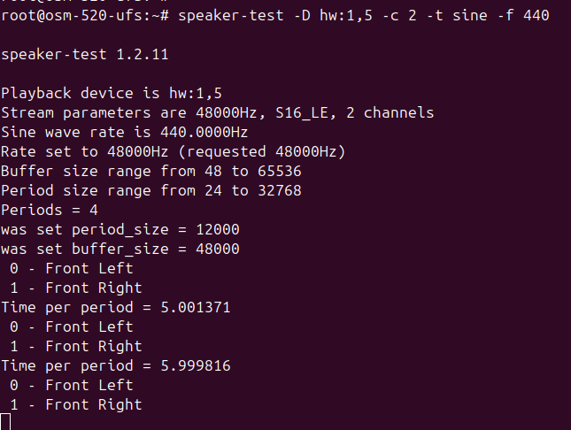 8. Camera (USB)A USB webcam can be tested using the following command. Replace [x] with the appropriate video device number (e.g., video2): gst-launch-1.0 v4l2src name=src device=/dev/video[x] io-mode=mmap ! video/x-raw,width=1280,height=720 ! autovideosink The camera output will be displayed on the DP output. 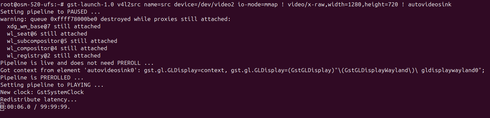 9. Camera 1 - CSI (CN2701)IMX258Step 1: Set the boot configuration to load the IMX258 camera device tree overlay, then reboot: fw_setenv boot_conf "#conf-mediatek_osm-520_mtk520.dtb#conf-ufs.dtbo#conf-apusys.dtbo#conf-camera-imx258-dual-std-osm520.dtbo"reboot Step 2: After reboot, navigate to the tools directory, source the camera test script and run the test case: cd tools/source ./genio_520_720_standard_v4l2_camera_testcase_20250905.shSINGLE_CAMERA_IMX258_CSI0 A successful test will show a steady frame rate output: <<<<<<<<<<<<<<<<<<<<<<<<<<<<<< 29.80 fps<<<<<<<<<<<<<<<<<<<<<<<<<<<<<< 29.80 fps<<<<<<<<<<<<<<<<<<<<<<<<<<<<<< 29.80 fps<<<<<<<<<<<<<<<<<<<<<<<<<<<<<< 29.80 fps<<<<<<<<<<<<<<<<<<<<<<<<<<<<<< 29.80 fps OV5640Step 1: Set the boot configuration to load the OV5640 camera device tree overlay, then reboot: fw_setenv boot_conf "#conf-mediatek_osm-520_mtk520.dtb#conf-ufs.dtbo#conf-apusys.dtbo#conf-camera-ov5640-dual-std-osm520.dtbo"reboot Step 2: After reboot, navigate to the tools directory, source the camera test script and run the test case: cd tools/source ./genio_520_720_standard_v4l2_camera_testcase_20250905.shSINGLE_CAMERA_OV5640_CSI0 Verify that the camera preview is displayed on the DP display. 10. Camera 2 - CSI (CN2702)IMX258Step 1: Set the boot configuration to load the IMX258 camera device tree overlay, then reboot: fw_setenv boot_conf "#conf-mediatek_osm-520_mtk520.dtb#conf-ufs.dtbo#conf-apusys.dtbo#conf-camera-imx258-dual-std-osm520.dtbo"reboot Step 2: After reboot, navigate to the tools directory, source the camera test script and run the test case: cd tools/source ./genio_520_720_standard_v4l2_camera_testcase_20250905.shSINGLE_CAMERA_IMX258_CSI1 A successful test will show a steady frame rate output: <<<<<<<<<<<<<<<<<<<<<<<<<<<<<< 29.80 fps<<<<<<<<<<<<<<<<<<<<<<<<<<<<<< 29.80 fps<<<<<<<<<<<<<<<<<<<<<<<<<<<<<< 29.80 fps<<<<<<<<<<<<<<<<<<<<<<<<<<<<<< 29.80 fps<<<<<<<<<<<<<<<<<<<<<<<<<<<<<< 29.80 fps OV5640Step 1: Set the boot configuration to load the OV5640 camera device tree overlay with DP panel support, then reboot: fw_setenv boot_conf "#conf-mediatek_osm-520_mtk520.dtb#conf-ufs.dtbo#conf-apusys.dtbo#conf-panel-dp.dtbo#conf-camera-ov5640-dual-std-osm520.dtbo"reboot Step 2: After reboot, navigate to the tools directory, source the camera test script and run the test case: cd tools/source ./genio_520_720_standard_v4l2_camera_testcase_20250905.shSINGLE_CAMERA_OV5640_CSI1 Verify that the camera preview is displayed on the DP display. 11. Pulse Width Modulation (PWM)The OSM-520 carrier provides PWM via pwmchip1. The confirmed pin mappings are listed below: PIN NAME CONNECTOR PIN NUMBER ON CONNECTOR LINUX OS PWM NUMBER PWM_1 CN2904 9 1 PWM_2 CN2904 11 2 Generating PWMUse the following commands to generate a PWM signal. Period and duty cycle values must be specified in nanoseconds. cd /sys/class/pwm/pwmchip1echo <LINUX OS PWM NUMBER> > exportcd pwm<LINUX OS PWM NUMBER>/echo <PERIOD_IN_NANO_SECONDS> > periodecho <DUTY_CYCLE_IN_NANO_SECONDS> > duty_cycleecho 1 > enable Example 1: Generate a 1 kHz signal with 50% duty cycle on pin CN2904-9 (PWM_1, Linux PWM number 1): Period = 1 / 1000 Hz = 1 ms = 1,000,000 nsDuty cycle = 1,000,000 × 0.5 = 500,000 ns cd /sys/class/pwm/pwmchip1echo 1 > exportcd pwm1/echo 1000000 > periodecho 500000 > duty_cycleecho 1 > enable Example 2: Generate a 1 kHz, 50% duty cycle signal on pin CN2904-11 (PWM_2, Linux PWM number 2): cd /sys/class/pwm/pwmchip1echo 2 > exportcd pwm2/echo 1000000 > periodecho 500000 > duty_cycleecho 1 > enable Testing PWM SignalsConnect an oscilloscope probe to the PWM pin to verify the duty cycle and period. In the examples below, a PWM signal of 1 kHz with 50% duty cycle is generated on pin 9 of CN2904. Period Measurement (1 kHz signal): 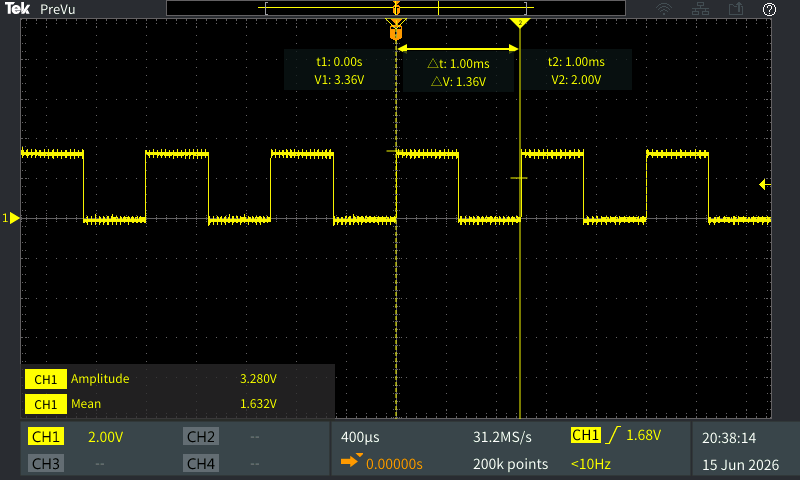 Duty Cycle Measurement (50% duty cycle): (Note: The measurement shows the LOW time, which is 0.5 ms, corresponding to a 50% duty cycle of ON time.) 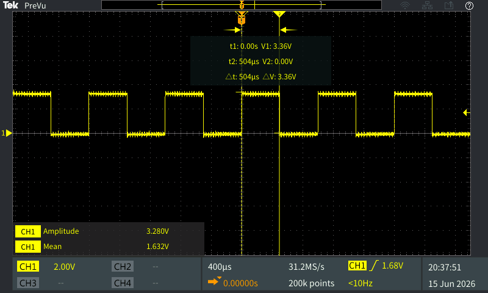 Disabling PWMTo disable a PWM signal, run the following command on the exported PWM channel: echo 0 > enable 12. UARTThe board provides two general-purpose UART interfaces. Their connector mappings and Linux device names are listed below: PIN NAME CONNECTOR PIN NUMBER ON CONNECTOR LINUX DEVICE NAME UART_C CN2901 8 (TX), 10 (RX) ttyS1 UART_D CN2904 15 (TX), 17 (RX) ttyS3 UART TestingHardware setup: Create a physical loopback by connecting the pins as follows: Connect CN2901-8 to CN2904-17 Connect CN2901-10 to CN2904-15 Configure both interfaces to a baud rate of 115200 and disable echo: stty -F /dev/ttyS1 speed 115200 -echostty -F /dev/ttyS3 speed 115200 -echo Verifying TX (Transmit) - ttyS1 to ttyS3: Run a listener on /dev/ttyS3 in the background, then transmit from /dev/ttyS1: cat /dev/ttyS3 &echo "adlink" > /dev/ttyS1 If successful, adlink will be printed to the terminal. Verifying RX (Receive) - ttyS3 to ttyS1: Run a listener on /dev/ttyS1 in the background, then transmit from /dev/ttyS3: cat /dev/ttyS1 &echo "adlink" > /dev/ttyS3 If successful, adlink will be printed to the terminal. 13. EthernetThe OSM-520 provides two Ethernet ports. Ping TestConnect an Ethernet cable to either CN801 or CN802 and run: ping 8.8.8.8 -I <end0 or enu1u5> -c 4# Example:ping 8.8.8.8 -I end0 -c 4 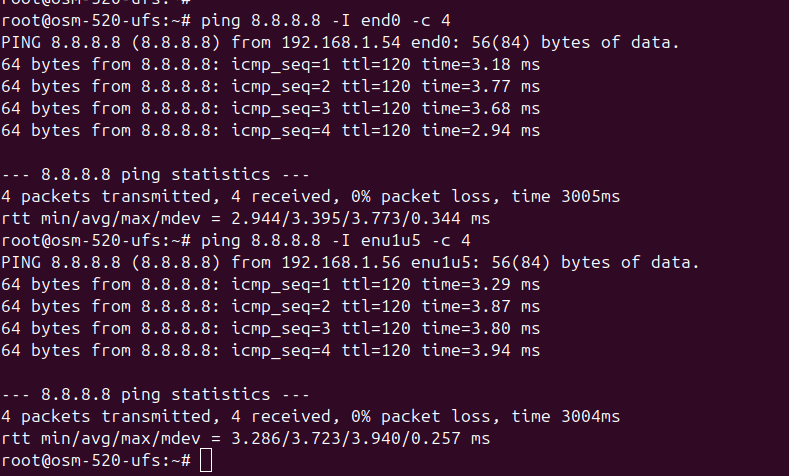 Throughput TestHost side - start an iperf server: iperf -s DUT side - connect both the host and DUT to the same LAN, then run: ifconfig <end0 or enu1u5> 192.168.10.2 netmask 255.255.255.0iperf3 -c 192.168.10.1iperf3 -c 192.168.10.1 -R 14. WiFiThe OSM-520 supports WiFi connectivity via the mlan0 interface. Follow the steps below to connect to a wireless network and verify connectivity. Step 1: Generate a WPA supplicant configuration file for your network: wpa_passphrase "YourSSID" "YourPassword" > /etc/wpa_supplicant/wpa_supplicant-mlan0.conf Step 2: Start the WPA supplicant in the background: wpa_supplicant -B -i mlan0 -c /etc/wpa_supplicant/wpa_supplicant-mlan0.conf Step 3: Obtain an IP address via DHCP: udhcpc -i mlan0 Step 4: Verify connectivity with a ping test: ping 8.8.8.8 -I mlan0 -c 4 A successful connection will show 4 packets transmitted and received with 0% packet loss. 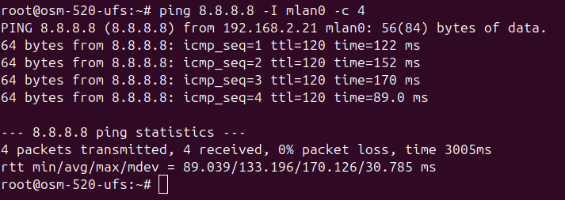 15. BluetoothThe OSM-520 supports Bluetooth connectivity via hci0. Follow the steps below to bring up the interface, scan for devices, and verify pairing. Step 1: Bring up the Bluetooth interface: hciconfig hci0 up Step 2: Launch the Bluetooth control utility: bluetoothctl Step 3: Inside the bluetoothctl prompt, register the agent and start scanning: default-agentagent onscan on Nearby devices will appear as they are discovered, for example: [NEW] Device 0A:1A:E4:B9:2F:10 TestDevice Step 4: Once the target device appears, stop the scan and initiate pairing. Replace the address with the one discovered in your scan: scan offpair XX:XX:XX:XX:XX:XX A passkey confirmation will be prompted on both the board and the remote device. Confirm on both sides: [agent] Confirm passkey XXXXXX (yes/no): yes A successful pairing will show: [CHG] Device XX:XX:XX:XX:XX:XX Bonded: yes[CHG] Device XX:XX:XX:XX:XX:XX Paired: yesPairing successful Step 5: Exit the utility: quit 16. PCIe/NVMeConnect an NVMe device to the M.2 PCIe slot on the board and run the following command to verify detection: lspci 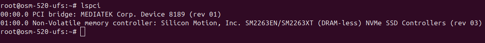 The NVMe device should appear in the output as a PCIe storage controller. Then confirm the block device is available: lsblk | grep nvme The device will appear as nvme0n1. Write Test: dd if=/dev/urandom of=/dev/nvme0n1 bs=1M count=500 oflag=direct Read Test: dd if=/dev/nvme0n1 of=/dev/null bs=1M count=500 iflag=direct Both commands will report the data transferred and speed on completion. A successful test will show 500 MB transferred with no errors. 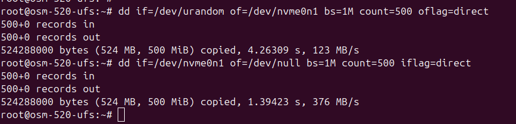 17. RTCFollow the steps below to set the RTC time and verify it is retained across a power cycle. Before power cycle - disable NTP sync, set the system time, and write it to the RTC: timedatectl set-ntp falsedate -s "2026-03-20 11:17:00"datehwclock -w -f /dev/rtc0hwclock -r -f /dev/rtc0 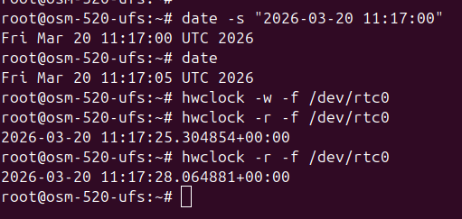 Power off the board, wait 2–5 minutes, then power it back on. After power cycle - verify the RTC time has been retained: hwclock -r -f /dev/rtc0 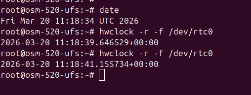 The returned timestamp should match the time set before the power cycle, confirming the RTC is functioning correctly. 18. ADCThe OSM-520 provides two ADC input pins on connector CN2903. To read the ADC value, short the pin to either GND or 1.8V and read the corresponding sysfs entry. ADC Channel 4 - CN2903-1: Short CN2903-1 to GND: cat /sys/bus/iio/devices/iio:device1/in_voltage4_input Expected output: 0 Short CN2903-1 to 1.8V: cat /sys/bus/iio/devices/iio:device1/in_voltage4_input Expected output: 1376 ADC Channel 5 - CN2903-2: Short CN2903-2 to GND: cat /sys/bus/iio/devices/iio:device1/in_voltage5_input Expected output: 0 Short CN2903-2 to 1.8V: cat /sys/bus/iio/devices/iio:device1/in_voltage5_input Expected output: 1376 19. ThermalTo read the temperature values from all available thermal zones, run the following command: i=0; while [ $i -lt 40 ]; do if [ -f /sys/class/thermal/thermal_zone$i/type ]; then type=$(cat /sys/class/thermal/thermal_zone$i/type); temp=$(cat /sys/class/thermal/thermal_zone$i/temp); echo "$i $type: $temp"; fi; i=$((i+1)); done The output lists each thermal zone by index, type, and temperature in millidegrees Celsius. For example: 0 soc_max: 318341 cpu-big1: 282262 cpu-big2: 280123 cpu-big3: 281804 cpu-big4: 281805 cpu-little1: 302296 cpu-little2: 308107 cpu-little3: 306728 cpu-little4: 305049 cpu-little5: 3197210 cpu-little6: 3165011 cpu-little7: 3204812 cpu-little8: 3209413 soc1: 3071814 soc2: 3041215 soc3: 3076416 apu: 3027517 gpu1: 2951018 gpu2: 29648 To convert a value to degrees Celsius, divide by 1000 (e.g., 31834 → ~31.8°C). 20. TPMTo verify the TPM module, run the following command: eltt2 -cgv A successful response will display the TPM clock info, fixed properties, memory settings, and startup state. For example: Clock info:=========================================================Time since the last TPM_Init:28790 ms = 0 y, 0 d, 0 h, 0 min, 28 s, 790 msTime during which the TPM has been powered:282907863 ms = 0 y, 3 d, 6 h, 35 min, 7 s, 863 msTPM Reset since the last TPM2_Clear: 488Number of times that TPM2_Shutdown: 0Safe: 1 = YesTPM capability information of fixed properties:=========================================================TPM_PT_FAMILY_INDICATOR: 2.0TPM_PT_LEVEL: 0TPM_PT_REVISION: 159TPM_PT_DAY_OF_YEAR: 9TPM_PT_YEAR: 2023TPM_PT_MANUFACTURER: STMTPM_PT_VENDOR_STRING: ST33KTPM2XTPM_PT_VENDOR_TPM_TYPE: 0TPM_PT_FIRMWARE_VERSION: 9.257.0TPM_PT_MEMORY:=========================================================Shared RAM: 0 CLEARShared NV: 1 SETObject Copied To Ram: 0 CLEARTPM_PT_PERMANENT:=========================================================Owner Auth Set: 0 CLEARSendorsement Auth Set: 0 CLEARLockout Auth Set: 0 CLEARDisable Clear: 0 CLEARIn Lockout: 0 CLEARTPM Generated EPS: 1 SETTPM capability information of variable properties:TPM_PT_STARTUP_CLEAR:=========================================================Ph Enable: 1 SETSh Enable: 1 SETEh Enable: 1 SETOrderly: 0 CLEAR Key fields to verify: TPM_PT_FAMILY_INDICATOR should report 2.0, TPM_PT_MANUFACTURER should identify the chip vendor, and Safe should be 1 = Yes.